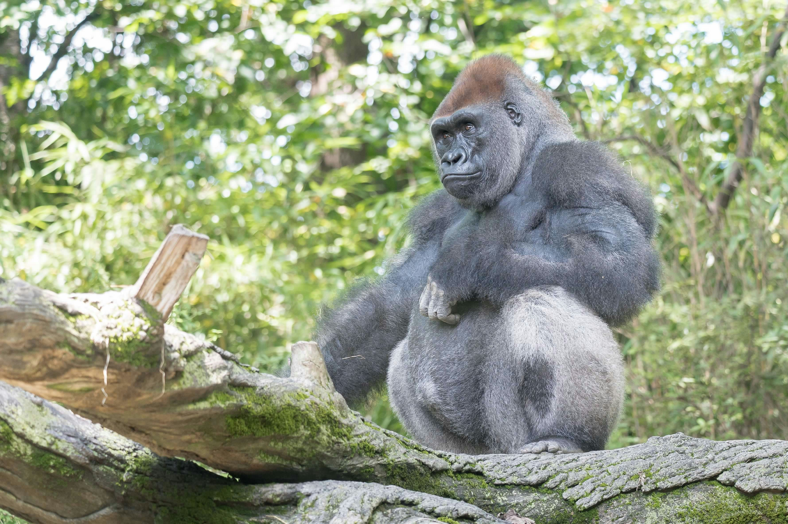

Great Ape Habitat Loss and Protected Area Effectiveness
How much forest has been lost across great ape habitat, and is forest loss lower within protected areas?
Featured by Orangutan Foundation International Canada ↗
View project ↗I combined 25 years of satellite-derived forest loss data with IUCN great ape ranges and protected-area boundaries across 13 countries in Africa and Southeast Asia.
The analysis compares forest loss inside and outside protected areas, with country-level maps, annual trends and protected-area coverage presented through an interactive Quarto analysis.
Data
Hansen Global Forest Change, IUCN species ranges and WDPA protected-area boundaries.
Methods
Raster analysis, spatial intersection, time-series aggregation and interactive visualization.
Tools
Python (rasterio, geoandas, pandas, plotly), QGIS and Quarto.